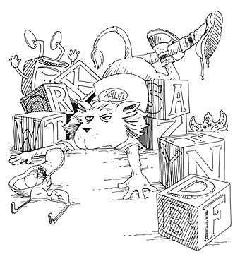
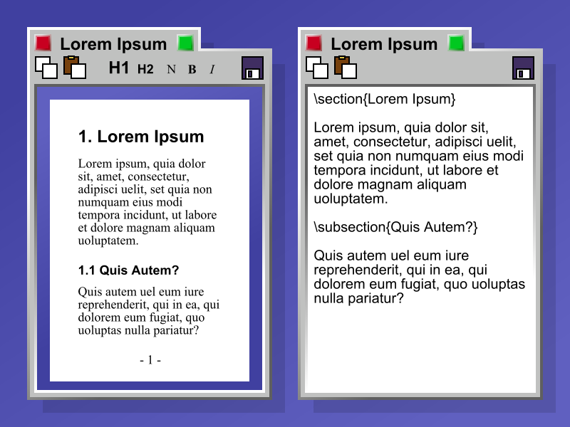

LaTeX
A mi me parece divertido que la gente reclame contra microsoft desde un PC con Windows XP, si linux les resuelve todos los problemas, ¿por qué no lo instalan?
Hay mucho de pose con respecto al tema del software libre, y también mucha ignorancia cuando se habla de tecnología.
Un ejemplo reciente de estos argumentos llenos de ignorancia es aquel que propone LaTeX como alternativa al formatoOOXML.
Bien, como fan de Knuth, y también de Leslie Lamport (sobretodo por su trabajo en computación distribuida), me siento con un cierto deber de explicar uno poco de que se trata esto de LaTeX, y por qué no es una alternativa a OOXML, y de paso ver si se aprovechamos de aportar algo de “cultura” al debate.

Primero, LaTeX es un conjunto de macros, y scripts que simplifican la composición de textos usando un sistema más general llamado TeX, inventado por nuestro querido Donald Knuth.
TeX corresponde a las letras griegas Tau, epsilon y Chi, y corresponde a la raiz griega TeX, como en la palabra griega tekné, que es la raiz de la palabra tecnología.
Así que esto de TeX es más que un sistema de composición tipográfica, es una manifestación de la filosofía de Knuth, con respecto a la relación entre arte y tecnología.
Sucede que a fines de los 70, Donald Knuth estaba revisando el segundo volumen de su obra magna, The Art Of Computer Programming (coloquialmente conocidoc como TAOCP). Insatisfecho con el resultado de las pruebas tipográficas, Knuth, una persona con un profundo sentido estético meditó y llegó a la conclusión de que el art de la tipografía digital consiste en ordenar 1’s y 0’s (tinta y no tinta) en un patrón apropiado. Así que se dijo, “Como científico en computación realmente puedo identificar 0’s y 1’s, así que algo puedo hacer al respecto”.
Knuth emprendió un trabajo que tomó unos diez años, en que recibió la ayuda de expertos en tipografía, como Hermann Zapf, el famoso diseñador tipográfico.
El resultado de esos años es el sistema conocido como TeX.
La intención de TeX “es permitir la creación de libros hermosos, especialemente libros que contienen mucha matemática” (de la introducción al Tex Book).
Una de las características interesantes de TeX es que su código fuente no sólo es libre, sino que está hermosamente escrito, puesto que fue escrito usando Web y Tangle, un lenguaje que permite componer código que es agradable de leer, usando una técnica conocida como Literate Programming.
Aparte de TeX, Knuth escribió MetaFONT, un sistema que permite especificar y crear fuentes en formato Bitmap.
Knuth presentó los fundamentos de su trabajo a la AMS (American Math Society)
- Este software debía ser usado directamente por los autores (y sus secretarias) que realmente son los que saben de qué están escribiendo.
- Venía de uan fuente academica, y por lo tanto estaría disponible libremente, sin necesidad de pago monetario alguno (en ese tiempo no se preocuparon mucho sobre el tema del soporte).
- El sistema terminaría estando disponible en cualquier sistema operativo y sería diseñado de modo que los archivosde entrada serían portable.
- Además el sistema no sería WYSIWYG.
De hecho, ese es uno de los problemas que aún persisten con los sistemas WYSIWYG. Por ejemplo, pueden introducir una fórmula matemática en un documento word y ocurre que la mísma fórmula matemática se puede ver mal en otra parte del documento. Para que vamos a hablar de lo que pasa con Word en Windows, versus la versión en un Mac.

Knuth en este proceso de creación concibe una de las mejores abstracciones que hay en un sistema computacional, se trata de los conceptos de Glue y Boxes, elementos centrales de la composición en TeX. Para programar eficientemente en TeX hay que dominar estos dos conceptos, que juntos permiten resolver muchos (si no todos) los problemas tipográficos que se presentan en la publicación profesional.
El trabajo de Knuth en TeX no sólo fue revolucionario, sino que probablemente estableció el mejor sistema de composición de textos que se haya logrado.
A principios de los 80, Leslie Lamport, tenía ambiciones similares a las de Knuth, escribir una mega obra, the Great American Concurrency Book, y como Lamport era usuario de TeX decidió escribir un conjunto de macros para poder escribir su libro.
Así nació LaTeX, un “sistema de preparación de documentos”, como lo llamó su autor. El prefijo La es simplemente las inicial de su autor, LaTeX es literlamente el TeX de Lamport.
Por años usé LaTeX en mi trabajo, y me divertí programando mis propias macros alternativas a las escritas por Lamport. Y seguiría usándolo si tuviera que escribir documentos con frecuencia, pero en realidad este sistema es ideal para publicaciones científicas, de hecho muchos journals exigen que los trabajos que se envían deben ir en LaTeX.
Pero en la práctica usar Word basta para escribir cartas, o informes. Pero en el mundo académico es ampliamente usado, probablemente porque tienen mucho más tiempo libre ;)
Como sea, la idea de LaTeX es despreocuparse de cómo va a lucir un documento para enfocarnos más en el contenido. El formato lo pone LaTeX, a través de una serie de plantillas pre definidas.
Por ejemplo, si quiero escribir un artículo debo escribir lo siguiente:
\documentclass[12pt]{article}
\usepackage{lingmacros}
\usepackage{tree-dvips}
\begin{document}
Este es un documento
\end{document}
El formato de como se va a ver este documento no es importante para el usuario de LaTeX. Lo que garantiza el sistema es que va a salir siempre igual. Si uno no contaba con un buen monitor podía gastar bastante papel realizando pruebas (algo que tampoco parece preocuparle mucho a los univesitarios).
Aunque con TeX se puede formatear cualquier cosa, hacerlo es un trabajo arduo, al final estás “programando tu texto”. Está muy bien en ciertos ambientes, como el académico, pero no es práctico para las empresas o el servicio público.
Sí, existen herramientas que permiten trabajar en forma visual con TeX o LaTex, pero no son muy flexibles y sus resultados tampoco son tran satisfactorios.
Pero hay que enteder que TeX permite componer la tipografía de un documento, está pensado para eso. No esta pensado para interoperar en ambientes de negocios.
Pongámoslo de esta manera, tu puedes crear un documento en TeX y el output, el resultado de aplicar TeX (o LaTeX) sobre tu documento es otro documento en otro formato, que puede ser Postscript, PDF, HTML, Word, u otro. ¡De hecho, se puede generar archivos ODF con LaTeX!
LaTeX es el lenguaje donde describes lo que quieres escribir, te preocupas más del contenido (si te preocupa la tipografía “bajas” a TeX).
ODF por otro lado es un formato que no sólo contiene el texto, sino que integra con multiples fuentes, agrega anexos binarios, como imágenes, sonido, y permite interoperar con otros sistemas.
ODF formatea el texto, al igual que LaTeX, pero es la capacidad de interoperar con otros sistemas lo que lo hace diferente, y le da su potencia (y utilidad).
Por ejemplo, uno puede insertar un fragmento de una planilla de cálculo dentro de una presentación, o una diapositiva dentro de un documento de texto, e incluso colocar un vínculo a una película, y todo eso interactúa en forma dinámica. Puedes presionar un botón y gatillar que el resultado de una fórmula en una planilla de cálculo cambie el texto completo de una carta.
Otro tema que para lo cual TeX tampoco fue pensado es la firma electrónica, de hecho, ¿puede alguien decirme qué es lo correcto: aplicar la firma electrónica al output final de un documento LaTeX o a la fuente? Este problema es bastante interesante en si mismo y daría para armar todo un estándar o un comite para evaluarlo.
Ese tipo de interoperabilidad es la que solucionan formatos propietarios como los de Microsoft Office, o formatos abiertos, como ODF.
LaTeX está pensado para preparar documentos, TeX está pensado para componer documentos con una bella tipografía.
ODF es algo distinto, es un formato para transportar información, integrar multiples sistemas y tecnologías multimediales, y facilitar la ofimática.
Además al ser ODF un documento XML uno puede realizar infinitas transformaciones adicionales, lo que permite automatizar miles de procesos.
No, LaTeX (y TeX) siendo sistemas extraordinariamente valiosos no son adecuados para las necesidades de la ofimática, y para el manejo documental. Así que es mejor no confundirse en estos temas.
Una última cosa, si necesitas ayuda con LaTeX, o con alguna macro para TeX o MetaFONT, bueno, no me preguntes, ya no me acuerdo.